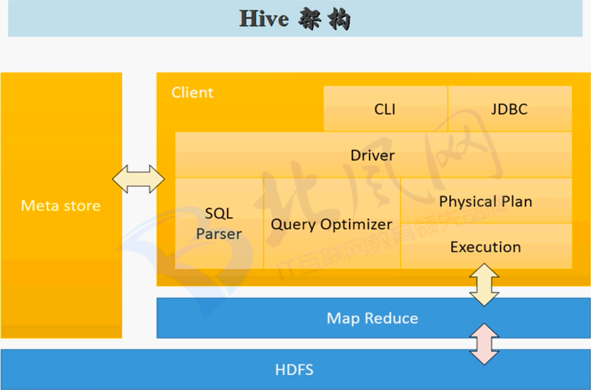

Hive介绍
由Facebook开源用于解决海量结构化日志的数据统计；
基于Hadoop的一个数据仓库工具，可以将结构化的数据文件映射成一张表，并提供类SQL查询功能。
- 使用HQL作为查询接口
- 使用HDFS存储
- 使用MapReduce计算
本质是：将HQL转化为MapReduce程序；
灵活性和扩展性比较好：支持UDF，自定义存储格式等；
适合离线数据处理；

metastore保存hive表的元信息，如文件与表的映射，一般metastore放在关系型数据库中，默认放在内存derby中，此时只运行一个终端打开。
在启动hive时设置配置属性信息
1 | $ bin/hive --hiveconf hive.root.logger=INFO,console |
Hive数据仓库在HDFS上位置
default数据库地址即user/hive/warehouse
其他数据库在user/hive/warehouse/DATABASE_NAME.db中
默认的存储路径为user/hive/warehouse/DATABASE_NAME.db/TABLE_NAME/data.txt
一般情况下，将数据文件直接拷贝到指定表的目录下，数据会自动加载到表中。但如果是分区表，而且分区文件夹是由我们自己手动创建的，再把文件上传到分区目录，数据是无法自动加载的，这是因为在metastore的partition表中没有存储这个分区的信息。这时可以通过以下两种方式进行修复
msck repair table table_name;alter table table_name add partition(key=vlaue);
一般的脚本过程
- 创建目录
- 将数据文件上传到目录
- 添加分区信息到元信息中
常用配置
配置仓库位置
<property>
<name>hive.metastore.warehouse.dir</name>
<value>/user/hive/warehouse</value>
</property>
$ $HADOOP_HOME/bin/hadoop fs -chmod g+w /tmp
$ $HADOOP_HOME/bin/hadoop fs -chmod g+w /user/hive/warehouse
##Hive运行日志配置
$HIVE_HOME/conf/hive-log4j.properties下
1 | hive.log.dir=/opt/modules/hive-0.13.1/logs |
##在cli命令行上显示当前数据库，以及查询表的行头信息
1 | $HIVE_HOME/conf/hive-site.xml |
##查看当前所有的配置信息
1 | hive > set ; |
1 | hive (db_hive)> set system:user.name ; |
此种方式，设置属性的值，仅仅在当前会话session生效
Hive常用命令
1 | bin/hive -e <quoted-query-string> #不会进入交互式界面，而是直接运行hql |
eg : bin/hive -e “select * from db_hive.student ;”
1 | bin/hive -f <filename> [ > <filename> ]#直接从脚本读取hql运行 |
1 | dfs ... #直接操作HDFS文件系统 |
1 | > !linux_cmd #在hive交互界面使用linux命令 |
1 | $HOME/.hivehistory #hive历史操作命令 |
1 | > desc formatted table_name #查看表详细信息 |
Hive调优
Hive数据存储
推荐格式：orcfile
推荐压缩算法：snappy
Hive数据压缩
见Hadoop MapReduce压缩
fetch task设置
设置为hive.fetch.task.conversion为more，则可以让更多的查询不走map reduce
大表拆分
外部表和分区表的使用
Map Reduce
SQL
HQL
DDL【官方文档】
创建数据库
1 | CREATE (DATABASE|SCHEMA) [IF NOT EXISTS] database_name |
删除数据库
1 | DROP (DATABASE|SCHEMA) [IF EXISTS] database_name [RESTRICT|CASCADE]; -- (Note: CASCADE用于级联删除一个数据库，即使下面有表存在) |
修改数据库
1 | ALTER (DATABASE|SCHEMA) database_name SET DBPROPERTIES (property_name=property_value, ...); -- (Note: SCHEMA added in Hive 0.14.0) |
创建表
1 | CREATE [TEMPORARY] [EXTERNAL] TABLE [IF NOT EXISTS] [db_name.]table_name -- (Note: TEMPORARY available in Hive 0.14.0 and later) |
DML【官方文档】
从文件导入数据
1 | LOAD DATA [LOCAL] INPATH 'filepath' [OVERWRITE] INTO TABLE tablename [PARTITION (partcol1=val1, partcol2=val2 ...)] |
导入数据的几种方式
通过insert插入数据
1 | insert into table table_name select * from table_name; |
创建的时候通过查询导入1
create table table_name as select * from table_name;
创建的时候通过location导入
1 | create table table_name() LOCATION hdfs_path; |
加载本地文件或hdfs文件到hive表文件夹
1 | LOAD DATA [LOCAL] INPATH 'filepath' [OVERWRITE] INTO TABLE tablename [PARTITION (partcol1=val1, partcol2=val2 ...)] |
通过import导入
1 | IMPORT [[EXTERNAL] TABLE new_or_original_tablename [PARTITION (part_column="value"[, ...])]] |
导出数据的几种方式
通过insert
1 | insert overwrite [local] directory 'dir_path' |
通过管道
1 | bin/hive -e "select statement" > file_path; |
通过sqoop
- hdfs/hive -> rdbms
- drbms -> hdfs/hive/hbase
通过export导出到hdfs上的其他目录
1 | EXPORT TABLE tablename [PARTITION (part_column="value"[, ...])] |
常用查询【官方文档】
1 | [WITH CommonTableExpression (, CommonTableExpression)*] (Note: Only available starting with Hive 0.13.0) |
- limit
- between
- is null / is not nul
- in / not in
- max / min / count / avg
- group by
- 求每个部门的平均工资：group by deptno
- 求每个部门中每个岗位的最高薪水：group by deptno, job
- having
- where针对单条记录进行筛选
- having针对分组结果进行筛选
- 如；求部门的平均薪水大于2000的的部门
- join
- a表中的一条记录和b表中的一条记录组成一条记录
- 等值join：join … on
- 左连接 left join：以左表为准，结果集中左表字段都会存在
- 右连接 right join：以右表为准，结果集中右表字段都会存在
- 全连接 full join
- Order by
- 全局排序，一个reduce，慎用
- sort by
- 对每个reduce内部数据进行排序，但是全局结果集没有排序
- 每个reduce输出一个文件
- distribute by
- 类似于map reduce中partition的作用，对数据进行分区，同一个区的由同一个reduce处理
- 通常结合sort by使用
- cluster by
- distribute by和sort by的字段相同时可以用来代替
Hive UDF编程【官方文档】
介绍
UDF（User Defined Funtion）： 一进一出
UDAF(User Defined Aggregation Function)：聚集函数，多进一出，类似count
UDTF（User Defined Table Generating Functions）：一进多出，如lateral view explore
编程步骤
- pom添加hadoop-client，hive-jdbc，hive-exec三个依赖
- 继承org.apache.hadoop.hive.ql.UDF
- 实现evaluete函数，其支持重载
- 打包jar
- hive中使用
CREATE FUNCTION [db_name.] func_name AS 'class_name' USING JAR 'jar_path'注册函数
注意：
- UDF必须要有返回类型，可以返回null，但是返回类型不能为void
- UDF中常用Text/LongWritable等，不推荐使用java类型